| 日付 | 2015年5月2日（土） - 2015年5月4日（月） | ||
|---|---|---|---|
| 山域 | 飛騨の山 | ||
| メンバー | 家族（妻、長女・4歳、長男・1歳） | ||
| 山行形態 | 子連れ2泊3日ホテル泊 | ||
| アクセス | 車 | ||
| ルート (Map) |
|
2日目
本日は位山に登る予定だ。山麓にあるモンデウススキー場に車を停める。標高900m。
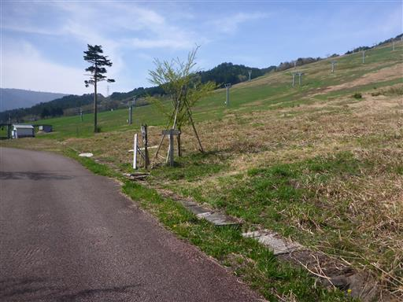
最初はスキー場の中を登って行く。木が全くないので、日差しが暑い。
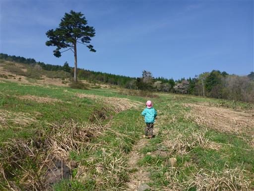
遠くに御嶽山の姿が見えている。
最近はあまり報道されないが、今でも噴煙を上げているのが見える。
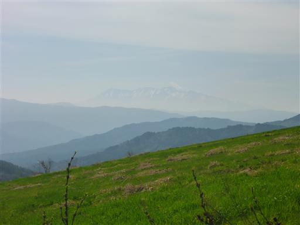
途中で息子も歩き始める。こうなるとなかなか前に進まない。
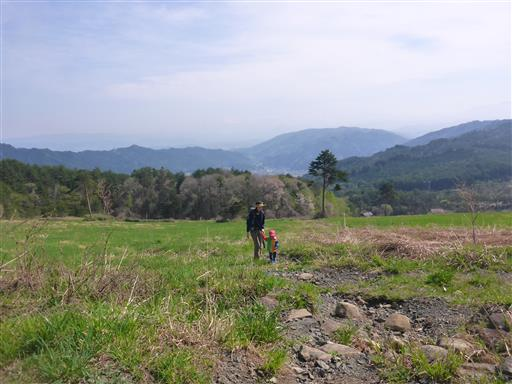
斜面に桜の花が咲いている。
息子はしばらく歩いたが、途中で疲れたようでキャリアに乗せる。
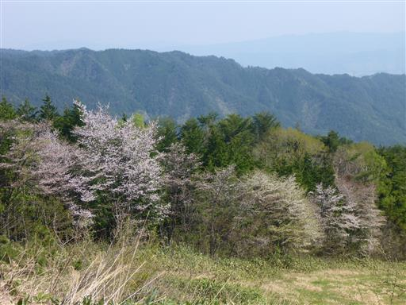
リフトの上部に到着。
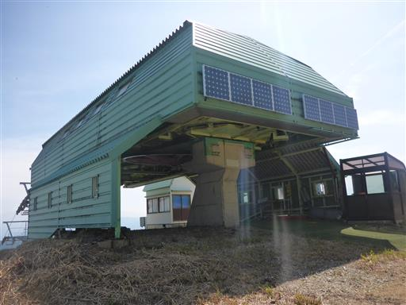
ここからは絶好の展望が広がる。
目の前に広がるのは北アルプス。穂高岳や笠ヶ岳が横一線に並んでいる。
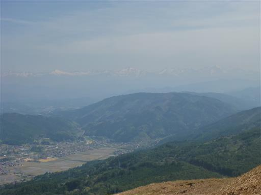
こちらは乗鞍岳。もうすこし空気が澄んでいれば良いのだが…
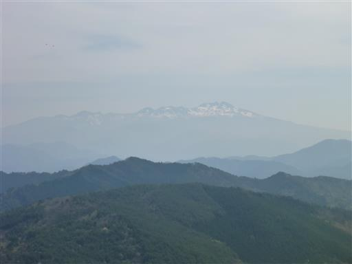
ここからようやく樹林帯の中の道になる。
大きな笹の葉が生い茂っていて、背の低い娘には少々歩きにくい。
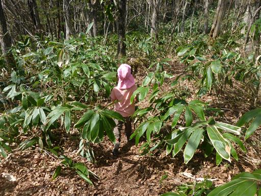
根本が一体になった巨大な木。異様な姿だ。

同じような形の木があちらこちらで見られる。
どういう原因で、こういう木が育つのだろう？
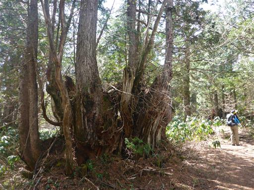
ミツバオウレンの花がたくさん咲いている。
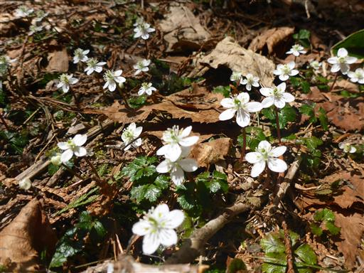
登山道には所々に石の名前が書かれた標識が立っている。
しかし、どの石もこれといった特徴のないものばかりだ。
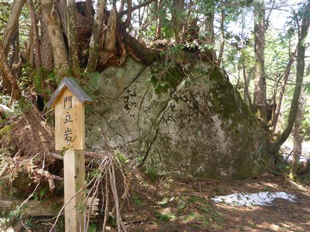
途中から残雪が現れる。山頂まで20分ほど雪と格闘する。
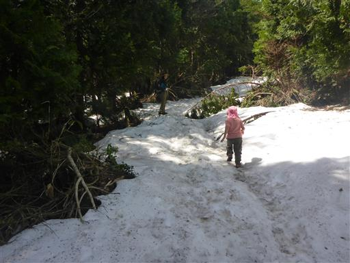
山頂の一角に到着。山頂部は広く、道は複雑だ。
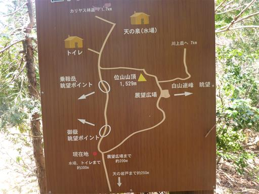
雪が無くなって歩きやすくなる。
娘が走り出して枝に顔をひっかけ、目の横と首を怪我してしまう。
大号泣で、介助が大変だ…
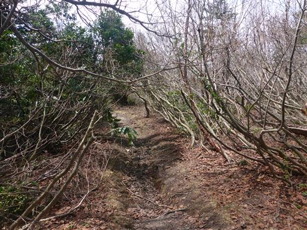
展望広場に到着。山頂より展望が良さそうなので、ここで昼食をとることにする。
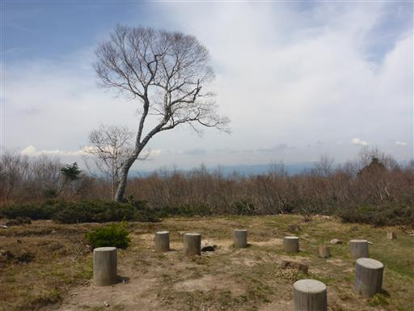
ここから見えるのは白山。意外に近くにあるのだが、霞んでいて何とか見える程度だ。
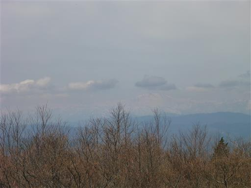
昼食後、位山山頂に向かう。

川上岳への縦走路との分岐点。
位山～川上岳の縦走路は楽しそうだが、ロングコースのため子供がいたら無理だ。
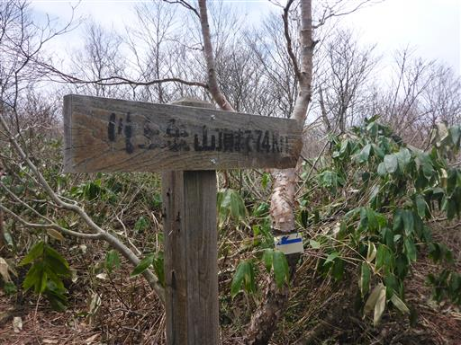
位山の山頂に到着する。標高1529m。
樹林に囲まれていて展望はない。
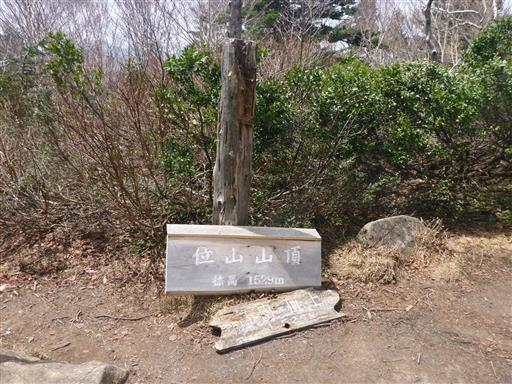
下山は来た道を戻る。雪が解けてぬかるんでいるため、非常に歩きにくい。
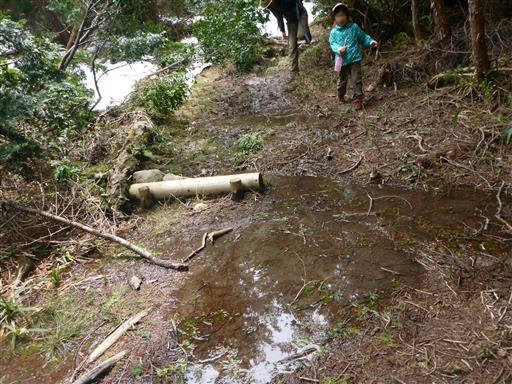
今にも崩れ落ちそうな危うい道を渡る。
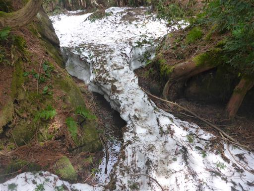
イワナシの花が咲いている。美しいピンク色だ。
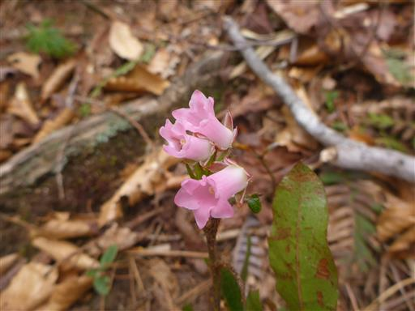
リフト乗り場で小休止したら、下山まであと少し。
ここから息子は再び歩き出す。
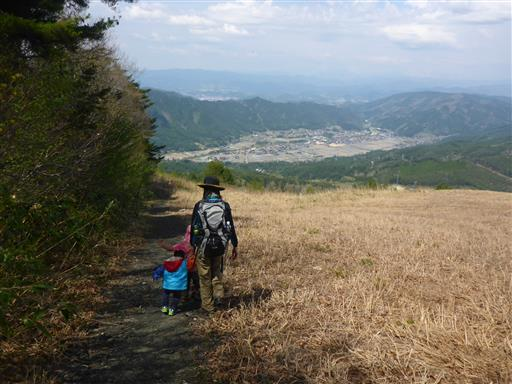
雲が出てきたが、朝よりも空気は澄んでいる。
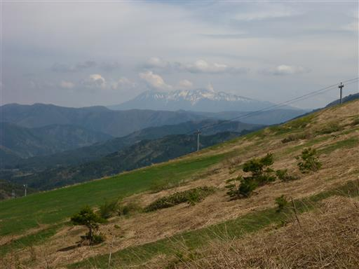
下山。息子はキャリアに乗ったり降りたりだった。
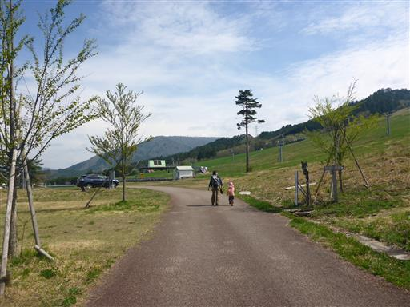
娘がリフトの椅子を見たいと言ったので見学する。大量の椅子が並んでいる。
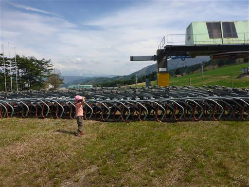
下山後、少し時間が余ったので、キュルノンチュエという燻製屋に行ってみる。
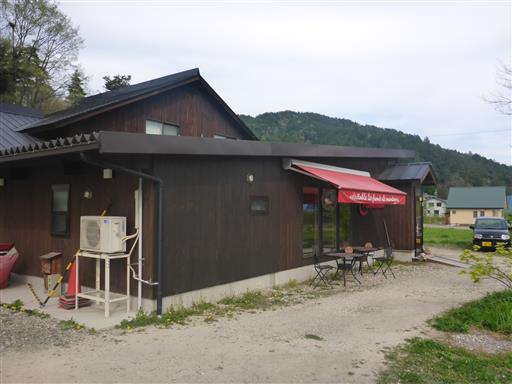
天井には製品が大量に吊るされている。
試食をさせてもらったが、全商品は要冷蔵とのことで購入は諦める。
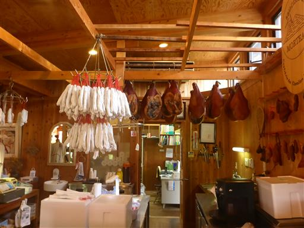
本日の宿は三宅荘。高山駅から一駅離れた位置にあり、周囲は閑散としている。
建物は古いが、かなりがっしりした造りだ。築100年以上らしい。
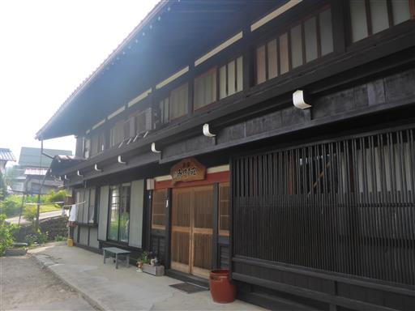
中はきれいに整備されている。
食事は子供料理も手作りで、暖かく良い宿だった。
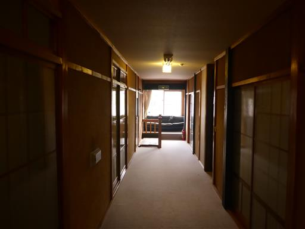